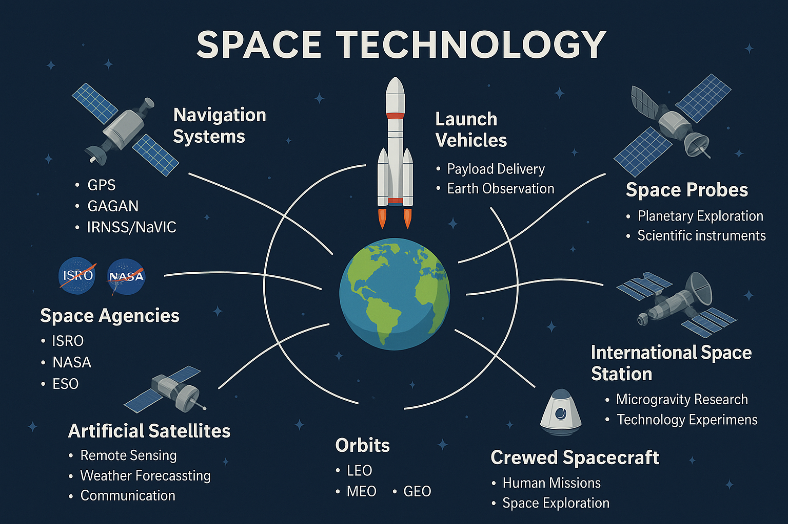

เทคโนโลยีอวกาศ คือ เทคโนโลยีที่มนุษย์พัฒนาขึ้นเพื่อใช้ศึกษาค้นคว้า สำรวจ และใช้ประโยชน์จากอวกาศ เช่น การส่งวัตถุขึ้นสู่วงโคจร การสังเกตโลกจากอวกาศ และการสื่อสารผ่านดาวเทียม เทคโนโลยีเหล่านี้มีบทบาทสำคัญทั้งด้านวิทยาศาสตร์และชีวิตประจำวัน